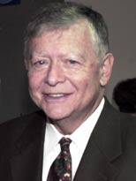

| MIT home | news office | 77 massachusetts avenue | 617-253-2700 |
| room 11-400 | cambridge, ma 02139-4307 | newsoffice@mit.edu |
Bill Dickson '56, retired senior vice president, diesWilliam R. Dickson, a retired senior vice president who supervised major building projects that tripled the size of MIT's campus, died Aug. 14 after suffering a heart attack. He was 71. Dickson worked at MIT for nearly 40 years, starting in Physical Plant and working his way up to senior vice president, a title he held for 16 years before retiring in 1998. As senior vice president, he was responsible for most of the operations of the Institute and much of the financial planning and activities. During his tenure, he was involved in a number of building projects, including Kresge Auditorium, the Green Building, Eastgate, Westgate, McCormick, the Whitaker Building, Building 16 and the Stata Center. "Bill was a bridge from the MIT of the 1950s to the MIT of the 21st century. We all benefited from his dedicated work, his straight talk and his inherent wisdom," said MIT President Emeritus Charles Vest. Dickson graduated from MIT in 1956 with a degree in building construction and engineering (Course 17). He spent two years as a staff engineer at Lincoln Laboratory then became an associate scientist at Avco Corp. in Wilmington. He returned to MIT as assistant to the director of Physical Plant in 1960 and became director of Physical Plant in 1971. In 1980, he was appointed vice president for operations, and he was named senior vice president in 1982. "He was a wise and effective leader," Vest said. "As befitted his years of experience, he had a knack for 'managing out of his hip pocket,' because he knew everybody and everything about the campus. He was completely devoid of ego and was revered by employees at all levels throughout MIT." When Dickson retired, he told The Tech student newspaper that his proudest accomplishment was helping the Institute grow from 3.5 million square feet of built space in 1960 to 10 million square feet at the time he left. MIT's co-generation plant, which is named for Dickson, was built after he initiated the project to combine hot water production with electricity generation in one plant. The facility, which uses natural gas to make the electricity that powers 80 percent of MIT's buildings, has won awards for design and environmental excellence. President Emeritus Paul Gray, who appointed Dickson senior vice president in 1982, said that Dickson was recognized early in his career as "not only an outstanding engineer but also an effective motivator and manager of others. He had a splendid memory of people and could call by name not only the men and women in his areas of responsibility but many others among the faculty and administration of the Institute." "The cost savings in the operation of the non-academic side of MIT achieved as a result of Bill's insights and wisdom are beyond reckoning. However, I am quite certain that the ongoing savings achieved as a direct consequence of the decisions and actions taken during his stewardship amount, at present, to more than $100 million per year, every year, possibly much more," Gray said. "We will not soon see his equal." Among his colleagues, Dickson was known not only for his encyclopedic knowledge of the Institute, but also for his ability to make things happen. "He had a terrific grasp on the workings of MIT and how to get things done," said Jay Keyser, professor emeritus of linguistics and philosophy and former associate provost who served on the Academic Council with Dickson. "He came up through the ranks, as it were," Keyser said. "He was somebody who never lost touch with the rank and file. He was one of them, and he understood where they came from." Institute Professor John Deutch said that Dickson had a personal touch in all of his interactions that inspired great loyalty among the people he worked with. "I think Bill Dickson is probably one of the best examples of what an MIT person is -- he had devotion to the place, and devotion to dealing with every individual to try to solve their problems and make their experience better," said Deutch. "And he didn't do it by bureacracy." Dickson was also known for his sense of humor and his respect for everyone he worked with. "One of the things that separated Bill from so many others was his treatment of people," said Sue Crowley, Dickson's longtime assistant. "He treated everyone with respect, was truly a man of the people, and he could relate to all levels of individuals -- professors, donors, City of Cambridge officials, senior officers and service staff. He was always very approachable and accessible to everyone." Dickson was a lifelong resident of Framingham and a 1952 graduate of Framingham High School. He served as chairman of the MetroWest Medical Center board of trustees for 12 years. He is survived by his wife, Ann (Lingley) Dickson; two sons, Christopher Dickson of Medway and Jeffrey Dickson of San Francisco; a daughter, Julie Ferrari of Framingham; a brother, Lee Dickson of Florida; and seven grandchildren. An afternoon remembrance will be held at the family home on Sunday, Aug. 27,��from 2 to 6 p.m., at 220 Singletary Lane, Framingham. Donations may be made to the William R. Dickson Scholarship Fund, at giving.mit.edu, account number 3296600; or The Friends of the Framingham Heart Study, 73 Mount Wayte Ave., Framingham 01702-5827. A version of this article appeared in MIT Tech Talk on September 13, 2006 (download PDF). |

William R. Dickson
TOOLSRSS feedsRELATEDDickson reminisces about building MIT - Describing himself as a "builder at heart," Senior Vice President William Dickson gave a nuts, bolts and history tour of the MIT campus to 30 people gathered for an Information Group luncheon on May 20. Mr. Dickson will retire on June 30. 6/3/1998 Oral history interviews with William R. Dickson - MIT Libraries, 2005 More: Administration More: Obituaries More: Staff |
| MIT home | news office | 77 massachusetts avenue | 617-253-2700 |
| room 11-400 | cambridge, ma 02139-4307 | newsoffice@mit.edu |